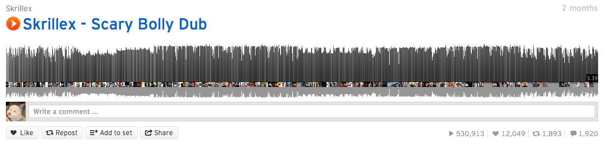
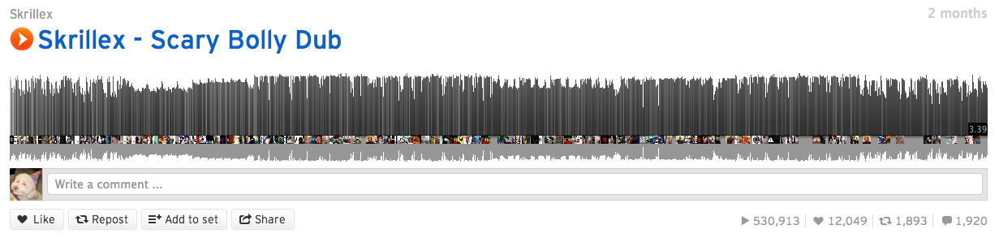

Remedies For Back Pain
Scaling Backbone.js at SoundCloud
Me
Darrell Stephenson
Front-End Engineer - SoundCloud
Quick Assumptions
You know what Backbone.js is
Awareness of single page application patterns
Oh, the pain.
Boilerplate
The pain of using the public API
When N gets big enough to (╯°□°）╯︵ ┻━┻
SoundCloud current scale
30 million registered users and growing
10 hours of audio are uploaded every minute
Default production app since December, 2012
~ 37,000 LOC. 80% of that is JS


So, like, what's your "stack" like
jQuery / Backbone / Underscore
Handlebars - with plenty of helpers
Require.js and Almond.js
Home grown deployment tools
More info here:
Boilerplate
This boilerplate is the product of much research and frustration.
60b9c27a » tbranyen 2012-01-05 initial commit Backbone Boilerplate Readme
What is this boilerplate?
Building apps on top of a single, compact library
Workflow and environment: build tools, file creation, file watching, etc.
Application internals: sharing model instances across views, a modular view system

Balance: models, collections, views
33 Models
48 Collections
~200 Views
Modular views - they do a lot
Rendering of templates
Mutate data before rendering
Establish a data source
Communicate with model
Manage their own visual states
Setup and teardown event listeners
Cache template elements
Respond to DOM / other events
Add or remove subviews.
{{$view "views/group-network/info" resource_id=options.resource_id}}
var GroupNetworkInfo,
Group = require('models/group'),
View = require('lib/view');
GroupNetworkInfo = module.exports = View.extend({
className : 'groupNetworkInfo l-fixed',
css : require('views/group-network/info.css'),
template : require('views/group-network/info.tmpl'),
ModelClass: Group,
requiredAttributes: ['artwork_url'],
observedAttributes: ['member_count']
});
View: the most important class for code growth
Most-used, but least built by Backbone
Solidifies a huge amount of shared behavior
Done properly, will save you bytes in the long run as your codebase scales
It will codify the biggest amount of convention in your project
Rx
Boilerplate is building the application foundation
Focus time and energy on getting the base view class right
Using the public API
"Dogfooding"
http://en.wikipedia.org/wiki/Eating_your_own_dog_food
Using your product the same way a user would

Other ways to maintain high product standards
Metrics, etc
Contractual agreements
Face to face with builders, understanding your users
Good
The data is there
Concentrates common business logic
Demands high-availability, low-latency, etc.
Bad
Far too generic to be performant at scale
Inflexible because of external obligations
{
"kind": "playlist",
"id": 3996139,
"created_at": "2013/03/07 18:05:36 +0000",
"user_id": 26599201,
"duration": 4815681,
"sharing": "public",
"tag_list": "",
"permalink": "under-suspicion",
"track_count": 20,
"streamable": true,
"downloadable": null,
"embeddable_by": "all",
"purchase_url": null,
"label_id": null,
"type": "compilation",
"playlist_type": "compilation",
"ean": "",
"description": "",
"genre": "indie rock",
"release": "",
"purchase_title": null,
"label_name": "",
"title": "Under Suspicion - a HotSpotMixtape",
"release_year": null,
"release_month": null,
"release_day": null,
"license": "all-rights-reserved",
"uri": "https://api.soundcloud.com/playlists/3996139",
"permalink_url": "http://soundcloud.com/hotspotmusic/sets/under-suspicion",
"artwork_url": "https://i1.sndcdn.com/artworks-000042490252-8emkrw-large.jpg?ca77017",
"user": {
"id": 26599201,
"kind": "user",
"permalink": "hotspotmusic",
"username": "HotSpotMusic",
"uri": "https://api.soundcloud.com/users/26599201",
"permalink_url": "http://soundcloud.com/hotspotmusic",
"avatar_url": "https://i1.sndcdn.com/avatars-000024919749-dqi17s-large.jpg?ca77017"
},
"tracks": [
{
"kind": "track",
"id": 72732920,
"created_at": "2012/12/27 16:26:48 +0000",
"user_id": 167094,
"duration": 336357,
"commentable": true,
"state": "finished",
"original_content_size": 8219405,
"sharing": "public",
"tag_list": "",
"permalink": "james-murphy-pulp-after-you",
"streamable": true,
"embeddable_by": "all",
"downloadable": false,
"purchase_url": null,
"label_id": null,
"purchase_title": null,
"genre": "",
"title": "James Murphy + Pulp - \"After You\"",
"description": "",
"label_name": "",
"release": "",
"track_type": "",
"key_signature": "",
"isrc": "",
"video_url": null,
"bpm": null,
"release_year": null,
"release_month": null,
"release_day": null,
"original_format": "mp3",
"license": "all-rights-reserved",
"uri": "https://api.soundcloud.com/tracks/72732920",
"user": {
"id": 167094,
"kind": "user",
"permalink": "selftitledmag",
"username": "selftitledmag",
"uri": "https://api.soundcloud.com/users/167094",
"permalink_url": "http://soundcloud.com/selftitledmag",
"avatar_url": "https://i1.sndcdn.com/avatars-000033946520-bt7ym0-large.jpg?ca77017"
}],
"likes_count": 1,
"reposts_count": 2,
"created_with": {
"id": 46941,
"kind": "app",
"name": "Ableton Uploader",
"uri": "https://api.soundcloud.com/apps/1234",
"permalink_url": "http://soundcloud.com/apps/permalink",
"external_url": "",
"creator": "someuser"
}
}
{
"kind": "playlist",
"id": 3996139,
"created_at": "2013/03/07 18:05:36 +0000",
"user_id": 26599201,
"duration": 4815681,
"sharing": "public",
"permalink": "under-suspicion",
"track_count": 20,
"streamable": true,
"downloadable": null,
"title": "Under Suspicion - a HotSpotMixtape",
"uri": "https://api.soundcloud.com/playlists/3996139",
"permalink_url": "http://soundcloud.com/hotspotmusic/sets/under-suspicion",
"artwork_url": "https://i1.sndcdn.com/artworks-000042490252-8emkrw-large.jpg?ca77017",
"likes_count": 1,
"reposts_count": 2
}
When your data source isnt flexible
Client code gets the brunt of it
More complexity on the client
More expensive operations on the client
More requests to the API


Real world data problems
The cleanest implementation is 1 data object / view
Design treats items functionally as a single collection
Server provides separate endpoints for each collection
Complications in readiness, error handling, merging events, etc

Time to get flexible


Rx
Using the public API doesn't work well at scale
Use flexible services without external obligations
Umm yeah, comments


When N gets big


Standard setup totals
4800 comments : 1,265 + 1,923 + 1,612
4080 comments : Without 15% replies and offscreen
Initial template-based approach
Worked fine on low counts. Displayed within a list view class
Each list item makes 4 nodes. li > a > img + span
16,320 nodes : 4080 * 4 : only 3 sounds
~272,000 nodes / stream : 50 sounds * (1,360 avg comments / sound * 4)

Limit-enforced template approach
40,000 nodes / stream : 50 sounds * 200 comments per * 4 nodes per
Back To The Canvas
"Templates? Where we are going we don't need templates."
Waveform comments canvas
Just 1 node per sound. Handles any amount of comments
No template just a this.context reference
Same patterns for collection events
Preloads avatars with an array of deferred objects and draws avatars in a single loop when resolved
Separate views sit on top to provide an interaction layer
Going even further
Limit to last x comments
Draw last x commenter avatars ...
but draw the correct amount of lines in a repeatable way
 


Hold up, wait a minute
Not a magic bullet for performance
Fits this use case really well
Rx
Break out of the standard view pattern where it makes sense
Backbone's view opinion is flexible enough to support this
More trickery

Shh ...
If the view is compressed into a very small space draw a fake
Choose from a pool of pre-selected waveforms, possibly cached on the client
Page is much faster, nobody can tell, everybody wins
Lesson learned
Illusions can go a long way
Conclusions
A strong modular view system is key to growing your codebase gracefully.
Public APIs are inflexible and can put the burden on the client. Use flexible, specific services for your production application instead.
Dont' be afraid to ditch the standard view. Canvas solves certain problems extremely well.
Sometimes an illusion is as good as the real thing.
Thanks!
We are hiring! : Questions? @futuredarrell